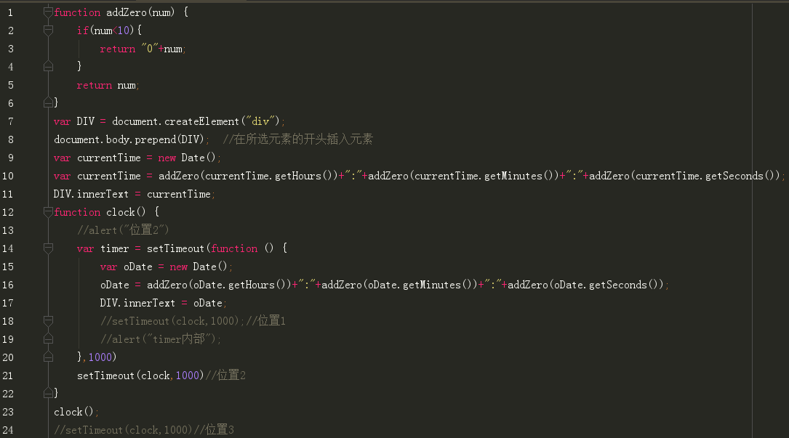
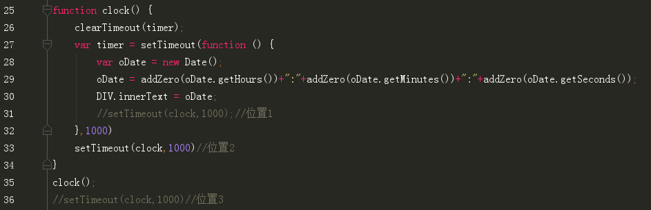
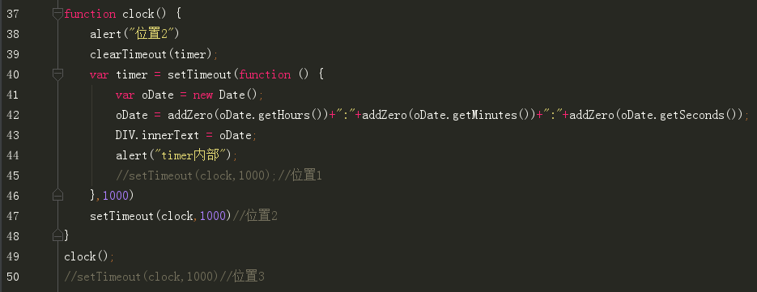
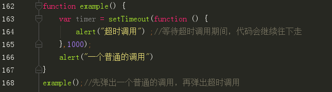

1.一个小时钟demo
链接在此！应该没有比这个更加简陋的时钟了惯例贴个代码
动态加载的页面，没有html，因为是最简陋的小时钟，所以也没有css只有js
2.遇到的setTimeout相关问题
今天在做时钟的时候，意识到了一个问题，即：
问题：这种情况下，在位置1，位置2，位置3调用，结果会不同吗？
首先，通过实验得出，如果在位置1，那么，这个时钟刷新的频率是1000+1000，即2秒刷新一次;而位置2和位置3，都是1秒刷新一次。当然位置3就刷新2次就定格时间了。
然后我在这两个地方放了两个alert帮助我判断setTimeout到底是怎么运行的
弹出框的情况是，首先弹出“位置2”，然后间隔一秒，弹出"timer内部"紧跟着弹出"位置2"，然后间隔一秒，再弹出"timer内部"紧跟着弹出"位置2"……
所以，为什么位置2的setTimeout不需要等待一秒才执行呢？！
因为在等待超时调用的期间，代码会继续往下走，而不是停在那里.
系统记录了这里有个timer的超时调用后，开始计时，并且代码往下走，结果马上遇到了另一个1000毫秒的超时调用，于是在这里停止（因为之后没有代码了） 1000毫秒后，两个超时调用时间都到了，于是弹出"timer内部"紧跟着弹出"位置2"。
然后我再写了一个例子证实了自己的猜想
这样！一切都明了啦！
其实这个问题是当时想的时候思维被局限了，想想如果把clearTimeout直接放在超时调用以后，那么这个超时调用永远不会执行，为什么呢？因为等待执行期间，代码块往下走，直接被clear掉了
啊！这个问题终于想明白了！神清气爽！